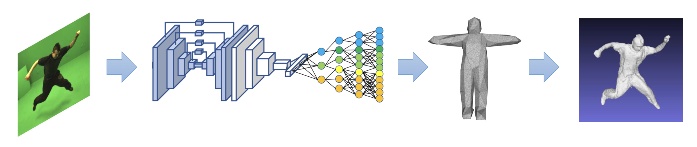
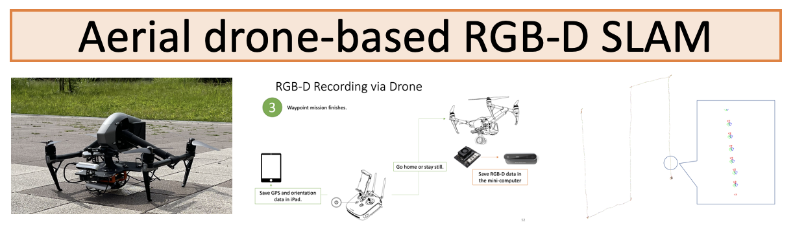

4D human body capture
SegmentedFusion: 3D human body reconstruction using stitched bounding boxes [Yao+ 3DV 2018]
 This paper presents SegmentedFusion, a method possessing the capability of reconstructing non-rigid 3D models of a human body by using a single depth camera with skeleton information. Our method estimates a dense volumetric 6D motion field that warps the integrated model into the live frame by segmenting a human body into different parts and building a canonical space for each part. The key feature of this work is that a deformed and connected canonical volume for each part is created, and it is used to integrate data. The dense volumetric warp field of one volume is represented efficiently by blending a few rigid transformations. Overall, SegmentedFusion is able to scan a non-rigidly deformed human surface as well as to estimate the dense motion field by using a consumer-grade depth camera.
PAPER
Augmented blendshapes for real-time simultaneous 3d head modeling and facial motion capture [Thomas+ CVPR2016]
We propose a method to build in real-time animated 3D head models using a consumer-grade RGB-D camera. Our framework is the first one to provide simultaneously comprehensive facial motion tracking and a detailed 3D model of the user's head. Anyone's head can be instantly reconstructed and his facial motion captured without requiring any training or pre-scanning. The user starts facing the camera with a neutral expression in the first frame, but is free to move, talk and change his face expression as he wills otherwise. The facial motion is tracked using a blendshape representation while the fine geometric details are captured using a Bump image mapped over the template mesh. We propose an efficient algorithm to grow and refine the 3D model of the head on-the-fly and in real-time. We demonstrate robust and high-fidelity simultaneous facial motion tracking and 3D head modeling results on a wide range of subjects with various head poses and facial expressions. Our proposed method offers interesting possibilities for animation production and 3D video telecommunications.
PAPER CODE
Motion retargeting
Landmark-guided deformation transfer of template facial expressions for automatic generation of avatar blendshapes [Onizuka+ ICCV workshop 2019]
Blendshape models are commonly used to track and re-target facial expressions to virtual avatars using RGB-D cameras and without using any facial marker. When using blendshape models, the target avatar model must possess a set of key-shapes that can be blended depending on the estimated facial expression. Creating realistic set of key-shapes is extremely difficult and requires time and professional expertise. As a consequence, blendshape-based re-targeting technology can only be used with a limited amount of pre-built avatar models, which is not attractive for the large public. In this paper, we propose an automatic method to easily generate realistic key-shapes of any avatar that map directly to the source blendshape model (the user is only required to select a few facial landmarks on the avatar mesh). By doing so, captured facial motion can be easily re-targeted to any avatar, even when the avatar has largely different shape and topology compared with the source template mesh.
PAPER CODE
Deep Gesture Generation for Social Robots Using Type-Specific Libraries [Teshima+ IROS2022]
Body language such as conversational gesture is a powerful way to ease communication. Conversational gestures do not only make a speech more lively but also contain semantic meaning that helps to stress important information in the discussion. In the field of robotics, giving conversational agents (humanoid robots or virtual avatars) the ability to properly use gestures is critical, yet remain a task of extraordinary difficulty. This is because given only a text as input, there are many possibilities and ambiguities to generate an appropriate gesture. Different to previous works we propose a new method that explicitly takes into account the gesture types to reduce these ambiguities and generate human-like conversational gestures. Key to our proposed system is a new gesture database built on the TED dataset that allows us to map a word to one of three types of gestures: “Imagistic” gestures, which express the content of the speech, “Beat” gestures, which emphasize words, and “No gestures.” We propose a system that first maps the words in the input text to their corresponding gesture type, generate type-specific gestures and combine the generated gestures into one final smooth gesture. In our comparative experiments, the effectiveness of the proposed method was confirmed in user studies for both avatar and humanoid robot.
PAPER
RGBD-D SLAM
An open source solution for aerial drone-based RGB-D scanning [Zhang+ MIRU 2021]
 Real-time dense 3D reconstruction of large-scale outdoor scenes remains extremely difficult due to large empty spaces and inaccessible areas. This is a critical problem for applications such as 3D mapping of cities or inspection of facilities in areas unreachable by humans. Consumer-grade micro unmanned aerial vehicles (MUAV) have recently become popular and open new possibilities for automatic 3D reconstruction of large scale outdoor scenes. However it is extremely difficult to equip a MUAV with a 3D scanner because of strict constraints of space and weight. We propose a new 3D scanning system equipped on a consumer-grade aerial drone that can capture live sequences of RGB-D data. Our proposed system consists of a mini computer powered by a portable battery and an RGB-D camera. We present a solution to easily equip this system onto a consumer-grade aerial drone (in a plug-and-play style), as well as the software to control it. We will make all resources publicly available for easy reproduction of our proposed system.
A flexible scene representation for 3d reconstruction using an rgb-d camera [Thomas+ ICCV 2013]
Updating a global 3D model with live RGB-D measurements has proven to be successful for 3D reconstruction of indoor scenes. Recently, a Truncated Signed Distance Function (TSDF) volumetric model and a fusion algorithm have been introduced (KinectFusion), showing significant advantages such as computational speed and accuracy of the reconstructed scene. This algorithm, however, is expensive in memory when constructing and updating the global model. As a consequence, the method is not well scalable to large scenes. We propose a new flexible 3D scene representation using a set of planes that is cheap in memory use and, nevertheless, achieves accurate reconstruction of indoor scenes from RGB-D image sequences. Projecting the scene onto different planes reduces significantly the size of the scene representation and thus it allows us to generate a global textured 3D model with lower memory requirement while keeping accuracy and easiness to update with live RGB-D measurements.
PAPER